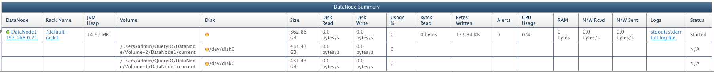

QueryIO provides disk monitoring to ensure that data stored in cluster is always safe.
All the disks configured in the cluster are monitored by QueryIO. S.M.A.R.T. disk monitoring tools are used by QueryIO to control and monitor storage systems using the Self-Monitoring, Analysis and Reporting Technology System (SMART) which is built using ATA and SCSI hard disks. These utilities provide advanced warning of disk degradation and failure in many cases.
S.M.A.R.T. (Self-Monitoring, Analysis and Reporting Technology) is a system which monitors computer hard disk drives to detect and report various indicators of reliability, in the hope of expecting failures. The aim of S.M.A.R.T. is to warn a user about expecting drive failure while there is still time to copy the data to a replacement device.
QueryIO monitors all the configured hard disks on the host machines in every 15 minutes and checks for the disk failure by checking various disk parameters like bad sectors, temperature of disk, seek error rate, spin count, power on hours, seek time performance, spin up count etc.
If any faulty disk is found, a mail alert is generated immediately informing fault in the disk with details. Thus necessary action can be taken before data is lost. Various details about the faulty disk attached in the mail are :
You can also see the disk status for individual data nodes in the Dashboard and DataNode details view. 
Here, you can see the status of the disks in the Disk column.
Disk Ok
Disk failure
Disk status unavailable